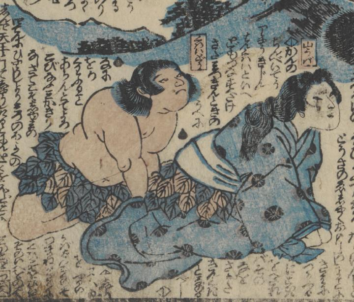

← 图鉴索引

頼光一行の前に手をつく山姥と怪童。衣服には木の葉が縫い付けてある。
著作者：一龍齋國久／出典：親書誌：U426_nichibunken_0431：頼光一代記圖繪／日付：2016／資源識別子：U426_nichibunken_0431_0003_0000
Copyright (c)2010- International Research Center for Japanese Studies, Kyoto, Japan. All rights reserved.